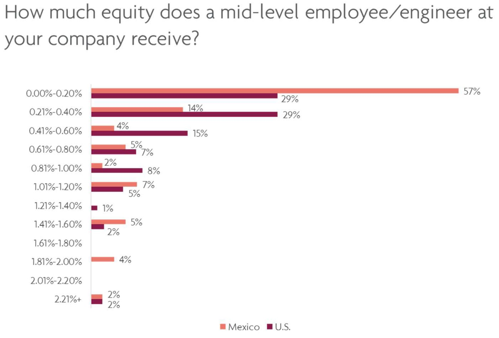

02. Mexico startups: Equity (and lack of)
Posted 2016-04-28
So as you may have read in my previous post, I’ve just come back from a few months in Mexico City. There I worked for ALL Venture Partners, the country’s leading early stage investors, and for one of their portfolio companies, Carrot, Mexico’s first carsharing service. It was a short but intense stint, and I definitely dove into the deep end of the local ecosystem.
My next few posts will be on some takeaways from working down there. To start, I’ll tackle a question I’ve been chewing on for a while.
Why don’t Mexican startups grant employees equity as often and as significantly as U.S. startups do?
Speaking to some people who work in Mexico’s startup scene, I noticed that equity was never a topic of conversation, and if it was, few employees ever said they had shares in their company. (This seemed to be a pretty sharp cultural difference between Silicon Valley and Mexico in one respect, but that huge cultural divide is a topic for another post.) I shrugged this off as circumstantial at first, but kept finding evidence to the contrary.
I confirmed the hunch, though, when I conducted a survey of Mexico founders based on First Round Capital’s “State of the Startups” survey. (ALLVP Research published the results here, and some of my analysis here.) Alright, so here’s the data:
As you can see, 60% of U.S.-based companies reported giving between 0.21% and 1% equity to a mid-level engineer. On the other hand, only 25% of founders in Mexico reported giving that amount of equity to any mid-level employee at their company.
That’s a pretty big difference. What’s the reason for this? I’m hypothesizing it’s a combination of four factors.
- Mexico employees have stricter and more immediate cash needs.
Though I don’t have concrete evidence to this effect, I’m willing to bet that the majority of people working in Mexico’s startups have a slightly different financial profile than their counterparts in the U.S. While those in the Valley, New York, and elsewhere can postpone their gains through hypothetical equity sales a few years down the line (of course that might be changing), I have the sense that the typical Mexico employee’s financial needs are more immediate. This different and more immediate cash need might lead a Mexico employee to request cash today instead of long-term and uncertain equity options. (This isn’t to say Mexico startup employees are living hand-to-mouth, because they’re not, but the fact remains that wages are much lower south of the border.)
- There haven’t been many models of success – so who’s to say equity will be worth anything?
Yes, there have been a few exits in Mexico’s ecosystem (e.g., BlaBlaCar’s acquisition of Aventones). Yes, there are quite a few other players that seem on the brink of making some people a lot of money (e.g., I’ll soon be talking about Mexico’s recent very exciting megarounds). However, there have not been enough splashy exits to make employees look at startup opportunities and see a lot of financial value in equity. Coupled with their more immediate cash needs, it adds up to employees placing a pretty high discount rate on equity.
- The ecosystem doesn’t yet have an “ownership” culture among employees.
Indeed, I got the sense that in some cases, an employer is an employer is an employer. The fact that it’s potentially a high-growth startup does not necessarily differentiate people’s interest in participating in that growth any more than it would someone working at a large corporation. Again, the lack of this culture could obviously be rooted in the other factors I’m naming, but it struck me nonetheless.
- Startups are not competing for talent.
While American startups grant pay and equity packages to be able to recruit top talent, I don’t get the sense that Mexico has a very large, dynamic market for startup talent. Indeed, there are lots of amazing people doing awesome work in the market, but much of the time, skills are limited to business operations and customer service type roles, usually because of the company’s business model. In other words, there isn’t much activity in the Top Coder area. (Again, a post for a later date: why Latam startups aren’t innovating much on the high-tech front.) So for founders, why bother? If you can get good talent for cheap and keep your option pool big, what’s the rush in offering equity to people you can replace when things don’t work out?
There’s definitely a very heavy mix of all these factors that lead to low employee equity participation in Mexico’s startups. That said, it’s important to reconsider the culture and the practice, especially when it could potentially have such a strong effect on incentivizing a growth mindset among teams.
‘Til next time,
Will